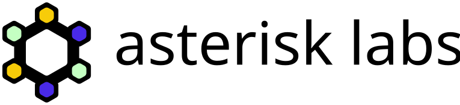
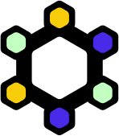

interdisciplinary research lab making the most of open data
this kit holds every approved version of the asterisk labs logo — as vectors and rasters — plus the rules for using them. take what you need, or grab everything at once.
the logo
the mark is a hexagonal ring of six nodes — a nod to structure, connection and the open data we build on. read it another way and the six arms form an asterisk, the lab's namesake. the three node colours stand for the three co-founders of the lab. it works on its own as a symbol, or locked up with the futura wordmark. the symbol's centre is transparent, so it sits cleanly on any background.

for dark backgrounds
two dark-mode treatments. dark #1 keeps the colour nodes and adds a crisp white outline — it's the default for dark backgrounds, because the black ring holds the nodes apart and keeps them legible. dark #2 turns the ring white; reserve it for solid black, where the white ring reads cleanly — on mid-tone or coloured dark surfaces the light nodes lose contrast against the white ring, so use dark #1 instead. plain white monochrome is also here.

colour
five colours. black and white carry the mark; the three brights are the nodes and work as accents. click any swatch to copy its value.
typography
the logotype is set in futura. it lives inside the logo files — you never need to typeset it yourself.
a free, open geometric sans that pairs with futura. use it for headings and body across the site and docs. it's the typeface this very page is set in. get it from google fonts or the league of moveable type.
asterisk runs light. league spartan is geometric and stays crisp at low weights, so lean on them and keep the heavy cuts for rare emphasis.
avoid the very light cuts (100–200) below ~20 px — the thin strokes break up — and reserve 700+ for the logo and rare high-impact moments.
clear space & sizing
keep space equal to one node (the small hexagon) clear on every side. nothing crowds the logo.
don't go smaller than these — below this the nodes start to fill in.

backgrounds & misuse
pick the version that keeps contrast high. white is primary; indigo is the main alternative.

need to match a specific theme? a single-colour (monochrome) mark in one theme colour is fine. the nodes may also be recoloured on purpose (see colour) — but never gradient-fill the mark or recolour the ring and wordmark.
please don't:
the corner frame
the stacked corner triangles are part of the brand — you can see them framing this very page. use them as a light frame on full-bleed layouts — slides, posters, social, covers. drop the matching overlay on top of your artwork, edge to edge, and keep your content inside a safe margin. grab a ready-made size below, or paste the web snippet.

- put the frame on the top layer, full-bleed to every edge.
- keep text and logos in a safe margin — never under the triangles.
- use one frame size per surface; don't resize single corners.
- don't recolour, rotate, or move the triangles off the corners.
app icons & favicons
the symbol, squared up for browser tabs, home screens and app tiles. favicon pngs come in 16–512 px.


email signature
a ready-made signature block. the image is already hosted on this site, so just paste the html into your mail client and edit the name.
|
your name (they/them)
researcher · asterisk labs
|
everything, in one download
all logos, symbols, icons and avatars — svg + png, transparent and solid-background — plus a colour reference and readme.
social avatars
square profile images, the mark centred on a brand colour. indigo is the default.